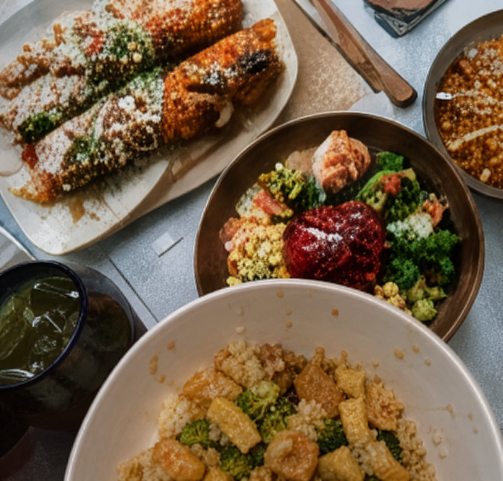
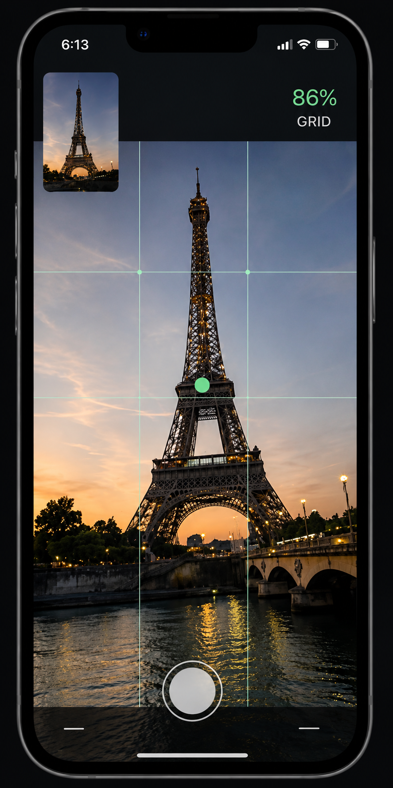
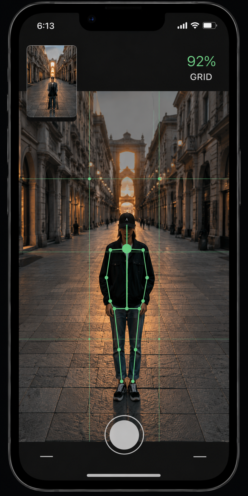

拍了很多張，
還是沒有一張滿意
AI PHOTOGRAPHY ASSISTANT
第一次，
就拍到理想畫面
Firstgram 即時分析拍攝畫面，提供物體辨識與 AI 建議兩種模式，幫助任何人快速找到理想構圖。
- 即時引導 動態提示移動方向
- 精準構圖 AI 分析比例與位置
- 第一次就上手 不需要攝影技巧
PAIN POINT
你也遇過這些拍照困擾嗎？
一張照片不應該反覆重拍，更不應該成為旅行與相處中的壓力。
地標被擋住，
畫面不完整
腳被切掉，
人物比例不自然
拍照變成壓力，
彼此開始不耐煩

不知道怎麼拍，
美食看起來不夠吸引
Firstgram 幫助任何人，都能拍出接近理想的照片。
TWO MODES
Firstgram 兩種拍攝模式
想重現指定照片，或是不知道該怎麼拍， Firstgram 都能提供適合的拍攝協助。

MODE 01 OBJECT RECOGNITION
物體辨識模式
重現你喜歡的參考照片
上傳一張參考照片，AI 會辨識照片中的地標、建築、 人物與主要物體，並比對目前的即時鏡頭畫面， 引導你還原接近參考照片的位置、距離與拍攝角度。
-
辨識主要物體
分析地標、建築、人物及畫面主體。
-
比對參考構圖
比較主體大小、位置、比例與留白。
-
即時拍攝引導
提示移動方向、距離與相機角度。
-
完成相似構圖
構圖達標後，提示使用者按下快門。

MODE 02 AI SUGGESTION
AI 建議模式
不知道怎麼拍，也沒關係
不需要準備參考照片。Firstgram 會即時分析現場光線、 背景、人物比例與畫面留白，直接推薦適合的人物位置、 拍攝方向和手機角度。
-
分析現場環境
判斷光線、背景及畫面中的視覺重點。
-
推薦人物位置
根據環境找出適合的人物站位。
-
提供構圖建議
調整角度、主體比例與畫面留白。
-
輕鬆完成拍攝
跟著簡單提示，拍出自然平衡的照片。
HOW IT WORKS
如何使用 Firstgram
不需要複雜設定，只要跟著四個步驟，就能完成拍攝。
-
01
選擇模式
選擇物體辨識模式，或 AI 建議模式。
-
02
AI 分析畫面
AI 分析背景、光線、物體與構圖比例。
-
03
即時引導
依照提示移動相機、人物或調整角度。
-
04
拍攝完成
構圖達標後，按下快門留下理想照片。
USE CASES
適用各種拍攝情境
從旅行、約會到日常記錄，Firstgram 都能提供拍攝協助。
旅行打卡
地標完整入鏡，留下美好回憶。
情侶合照
拍出自然構圖，減少反覆重拍。
朋友出遊
不再反覆重拍，把時間留給相處。
美食記錄
改善拍攝角度，提升照片質感。
AI TECHNOLOGY
AI 如何幫助你拍出理想照片？
將複雜的影像分析，轉換成簡單而即時的拍攝提示。
-
物體辨識
辨識畫面中的地標、建築、人物與主要物體。
-
構圖分析
分析比例、對稱、視線動線與畫面留白。
-
相似度比對
比較參考照片與目前畫面的構圖差異。
-
即時引導
將分析結果轉換成清楚的方向與角度提示。
-
完成拍攝
構圖達標後，即時提示使用者按下快門。
EARLY ACCESS
成為第一批體驗者
留下你的 Email，Firstgram 開放體驗時，我們會優先通知你。
已加入體驗名單
謝謝你對 Firstgram 感興趣。